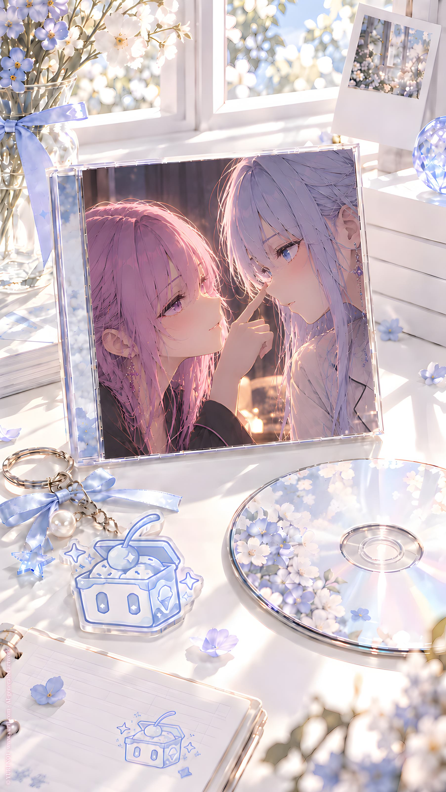

ORIGINAL TRACK ／ YURI NO1
3 小雪恋愛課程
Icy · Mini Album Vol.1
Lyrics · Base Script
[Intro — Whisper]
恋愛課程
対象
S.Icy
経験
……不足
教材
百合ドラマ
観察開始
[Verse 1 — Rapid Spoken]
見る
止める
戻す
見る
女の子
女の子
近い
近すぎる
会話
沈黙
視線
沈黙
手を触る
止まる
見つめる
止まる
顔が近い
もっと近い
……
なんで？
[Whisper]
言えばいいのに
[Rapid Spoken]
好きなら
好き
帰りたいなら
帰る
触りたいなら
触る
それで
終わりじゃない？
なのに
言わない
逃げる
振り返る
泣く
追いかける
忙しい
恋愛
効率が悪い
[Pre-Chorus — Breath Spoken]
そして
また
顔が近い
近い
近い
……
[Silence]
[Whisper]
あ
キスした
[Chorus]
わからない
なんでそこで
キスするの？
言葉があるなら
言えばいい
好きなら
好きで
嫌いなら
嫌いで
でも
あの顔を見ると
たぶん
それだけじゃ
足りないらしい
恋愛
難しい
[Post-Chorus — Fast Whisper]
見る
止める
戻す
見る
百合
百合
百合
理解度
三十二パーセント
……低い
[Verse 2 — Rapid Spoken]
外出
信号
横断歩道
コンビニ
公園
前方
女の子
二人
距離
近い
会話
聞こえない
片方が笑う
もう片方が
髪を触る
接近
接近
接近
[Whisper]
……また？
[Silence]
キス
[Whisper — Murmur]
外でもするんだ
人いるけど
気にしない？
寒くない？
長くない？
息できる？
……
あ
離れた
笑ってる
[Rapid Spoken]
観察結果
嫌ではないらしい
むしろ
嬉しそう
記録
参考になる？
……
たぶん
[Verse 3 — Spoken]
帰宅
ドア
靴
バッグ
ただいま
姉
接近
[Silence]
……え
[Whisper]
ちょっと
[Rapid Spoken]
近い近い近い
待って
説明
説明が先
なんで
今
キス
[Silence]
……
押す
押す
押す
動かない
強い
面倒
[Whisper]
……姉だからって
強引
[Rapid Spoken]
合わせる
少し
右？
違う？
左？
今度は
目を閉じる？
息は？
手は？
どこ？
テレビと違う
教材と違う
実践
急すぎる
[Chorus]
恋愛って
こんなに
忙しいの？
見つめて
触って
黙って
近づいて
今度は
合わせて
次は
離れて
また近づいて
……
面倒
[Whisper]
でも
少しだけ
わかったかも
[Break — Domestic Rapid Spoken]
洗濯
掃除
皿洗い
ゴミ
タオル
冷蔵庫
こっちやって
それ片づけて
あとこれ
忘れないで
はいはい
わかった
今やる
あとでやる
……
やっぱり
恋愛より
家事の方が
難しい
[Silence]
[Whisper]
もういい
考えるの
やめた
[Bridge — Light Mechanical]
アイス
買いに行こう
ミルク
ミント
ベリー
葡萄
冷たい
甘い
わかりやすい
恋愛より
ずっといい
選んで
買って
食べる
終了
簡単
[Verse 4 — Slow Spoken]
店の前
列
一人
二人
三人
前に
女の子
薄紫の髪
……
知らない人
[Whisper]
でも
きれい
[Rapid Spoken]
観察開始
髪
服
靴
バッグ
指輪
なし
待ち合わせ？
なし
スマホ
見る
メッセージ
相手
不明
恋人
いる？
不明
女の子が
好き？
不明
百合の確率
計算
十
二十
三十
……
根拠
なし
再計算
髪が薄紫
関係なし
服がかわいい
関係なし
女の子
……
それだけ
[Whisper]
判定不能
[Pre-Chorus — Soft]
でも
気になる
理由
不明
さっきから
アイスより
見てる
[Silence]
前の女の子が
受け取る
振り返る
歩く
離れる
遠くなる
角を曲がる
消える
[Whisper]
……行っちゃった
[Final Chorus — Soft]
恋愛って
まだ
わからない
テレビでも
街でも
家でも
全部
少しずつ違う
好きって
どこから？
見ること？
気になること？
もう一回
会いたいこと？
それとも
アイスを選ぶのも
忘れること？
[Rapid Whisper]
観察
記録
推測
失敗
観察記録推測失敗
女の子
薄紫
後ろ姿
女の子
薄紫
後ろ姿
まだ見てる
まだ見てる
まだ——
[Silence]
[Vendor]
何にしますか？
[Pause]
[S.Icy — Absentminded]
女の子
[Silence]
[Vendor]
……え？
[Pause]
[S.Icy — Flat]
アイスクリーム
[Outro — Whisper]
……
危ない
恋愛課程
理解度
三十三パーセント
一パーセント
上がった
YURI NO1 Music \ https://music.yuri1.com